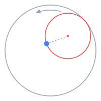

Spirographs
Math Art
Geometry
Parametric Curves
Roll one circle around another and trace the curve a pen draws.
Author
Apurva Nakade
Published
September 23, 2026
Suppose you roll a circle of radius 1 around the inside of a circle of radius 2, and follow a single point on the smaller circle. What path does that point trace? Think of an answer before looking below. You might be surprised.

urlParams = new URLSearchParams(window.location.search)
initialMax = urlParams.get("max") ?? "30"
initialD = {
const value = VM.expressions.makeNumber(window.math, urlParams.get("d") ?? "5")
if (value === null || !Number.isFinite(value) || value < 0) return 5
return value
}
initialMode = {
if (urlParams.get("mode") === "outside") return "outside"
return "inside"
}
initialTurns = {
const value = Number(urlParams.get("t"))
if (urlParams.get("t") === null || !Number.isFinite(value)) return null
return value
}traceOptions = ["Fixed circle", "Rolling circle", "Traced path"]
// vmTheme re-runs everything that bakes a theme color into a trace; see
// apps/newton-method/index.qmd for the full explanation.
vmTheme = Generators.observe(notify => VM.plotting.onThemeChange(notify))
chartColors = VM.plotting.colors(vmTheme)
traceColors = new Map([
["Fixed circle", chartColors.muted],
["Rolling circle", chartColors.alt],
["Traced path", chartColors.fn]
])// examples backs the "Try an example" dropdown. max is listed first: it
// bounds the t slider, whose view is recreated when it changes.
examples = [
// The page's default inputs come first, so the dropdown names them on
// load: a curve that doesn't give away the puzzle at the top of the page
// (R = 2r, the first named curve below, is its answer).
{
title: "Rational ratio: R/r = 8/5, d = r",
params: {max: "30", R: "8", r: "5", d: "5", mode: "inside"}
},
// Classic named curves, one per (R, r, mode): a case that differs from
// another only in d (the ellipse, the limaçon) is a drag of the d slider
// away, so it is only in the menagerie at the bottom of the page.
{
title: "R = 2r: straight line (d = r) → ellipse",
params: {max: "30", R: "2", r: "1", d: "1", mode: "inside"}
},
{
title: "Hypocycloid: astroid (R = 4r, d = r)",
params: {max: "30", R: "4", r: "1", d: "1", mode: "inside"}
},
{
title: "R = r outside: cardioid (d = r) → limaçon",
params: {max: "30", R: "1", r: "1", d: "1", mode: "outside"}
},
{
title: "Rose (d = R − r)",
params: {max: "30", R: "8", r: "3", d: "5", mode: "inside"}
},
// Beyond the named curves: more rational ratios, and an irrational one.
{
title: "Rational ratio: five-point star (R/r = 5/3)",
params: {max: "30", R: "5", r: "3", d: "5", mode: "inside"}
},
{
title: "Rational ratio: rounded triangle (R/r = 3/2)",
params: {max: "30", R: "3", r: "2", d: "1.5", mode: "inside"}
},
{
title: "Rational ratio: lacy ring (R/r = 35/12)",
params: {max: "30", R: "105", r: "36", d: "30", mode: "inside"}
},
{
title: "Irrational ratio: R/r = √2, never closes",
params: {max: "40", R: "sqrt(2)", r: "1", d: "0.8", mode: "inside"}
},
{
title: "Irrational ratio: golden ratio, outside",
params: {max: "30", R: "(1 + sqrt(5))/2", r: "1", d: "1.4", mode: "outside"}
}
]// Always-live (not gated behind Plot): it bounds the t slider for a curve
// that never closes, or closes only after more turns than this.
viewof maxTurnsInput = {
const input = Inputs.text({label: "Max turns", value: initialMax, placeholder: "Example: 30"})
input.dataset.exampleField = "max"
return input
}// A plain "change" listener attached once, not a cell reactive on
// exampleSelect -- see apps/newton-method/index.qmd.
applyExampleFromSelect = {
const nativeSelect = (viewof exampleSelect).querySelector("select")
if (!nativeSelect) return
nativeSelect.addEventListener("change", () => {
const example = (viewof exampleSelect).value
if (!example) return
VM.ui.applyExampleParams(exampleFieldSelectors, example.params, viewof plotTrigger)
})
}// Keeps the dropdown naming the example the fields above hold ("Custom
// inputs" once none does). Reads every example field's value so it re-runs
// whenever one changes; it only sets the dropdown, never a field.
syncExampleFromFields = {
maxTurnsInput; RText; rText; penDistance; mode
VM.ui.syncExampleSelect(viewof exampleSelect, examples, exampleFieldSelectors)
}// Pressing Enter in R or r clicks Plot.
enterToPlot = {
for (const view of [viewof RText, viewof rText]) {
const input = view.querySelector("input")
if (!input) continue
input.addEventListener("keydown", (e) => {
if (e.key !== "Enter") return
e.preventDefault()
viewof plotTrigger.querySelector("button").click()
})
}
}// committed snapshots R/r only when Plot is clicked (it reads the stable
// views, not the reactive values) and writes them into the URL.
committed = {
plotTrigger
const RVal = (viewof RText).value
const rVal = (viewof rText).value
const params = new URLSearchParams(window.location.search)
params.set("R", RVal)
params.set("r", rVal)
history.replaceState(null, "", `${window.location.pathname}?${params}`)
return {RText: RVal, rText: rVal}
}// max, d, mode and t are always-live, so they get their own sync cell.
urlSyncControls = {
const params = new URLSearchParams(window.location.search)
params.set("max", maxTurnsInput)
params.set("d", String(penDistance))
params.set("mode", mode)
params.set("t", String(turns))
history.replaceState(null, "", `${window.location.pathname}?${params}`)
return true
}// rationalApprox finds p/q = x with q <= maxDen, via the continued-fraction
// convergents of x, or returns null when none is within a relative 1e-9.
// Floating-point input such as sqrt(2) or pi therefore reads as irrational:
// its closest convergents with q <= 1000 are still ~1e-7 off.
function rationalApprox(x, maxDen = 1000) {
const tolerance = 1e-9 * Math.max(1, Math.abs(x))
let pPrev = 1, qPrev = 0
let p = Math.floor(x), q = 1
let rest = x - Math.floor(x)
while (q <= maxDen) {
if (Math.abs(x - p / q) <= tolerance) return {p, q}
if (rest < 1e-15) return null
const inverse = 1 / rest
const digit = Math.floor(inverse)
rest = inverse - digit
const pNext = digit * p + pPrev
const qNext = digit * q + qPrev
pPrev = p
qPrev = q
p = pNext
q = qNext
}
return null
}// result: the committed radii, the live pen distance, whether R/r is rational, and
// closeTurns, the number of turns after which the curve closes (null: never).
// If R/r = p/q in lowest terms, the curve closes after q turns of the
// rolling circle's center around the fixed one, inside or outside alike.
// The exception is d = 0: the pen sits at the rolling circle's center, which
// traces the circle a e^{it} and closes after one turn whatever R/r is.
result = {
const math = window.math
const R = VM.expressions.makeNumber(math, committed.RText)
const r = VM.expressions.makeNumber(math, committed.rText)
const d = penDistance
const valid = Number.isFinite(R) && Number.isFinite(r) && Number.isFinite(d) && R > 0 && r > 0
if (!valid) return {valid: false, R: 1, r: 1, d: 0, fraction: null, closeTurns: null}
const fraction = rationalApprox(R / r)
let closeTurns = null
if (d === 0) {
closeTurns = 1
} else if (fraction) {
closeTurns = fraction.q
}
return {valid: true, R, r, d, fraction, closeTurns}
}// curve(R, r, d, mode) returns the geometry at angle theta (the angle of the
// rolling circle's center), with sigma = +1 inside and -1 outside:
// a = R - sigma r distance from the origin to the rolling center
// k = a / r how fast the rolling circle spins
// z = a e^{i theta} + sigma d e^{-i sigma k theta}
function curve(R, r, d, mode) {
let sigma = 1
if (mode === "outside") sigma = -1
const a = R - sigma * r
const k = a / r
return {
a, k, sigma,
center: theta => [a * Math.cos(theta), a * Math.sin(theta)],
pen: theta => [
a * Math.cos(theta) + sigma * d * Math.cos(k * theta),
a * Math.sin(theta) - d * Math.sin(k * theta)
]
}
}// path samples the whole curve over [0, T] turns once per commit/mode
// change, so moving the t slider only slices it. More samples per turn when
// the pen spins fast, capped so a long irrational run stays light.
path = {
const {R, r, d} = result
const geometry = curve(R, r, d, mode)
const perTurn = 240 * (1 + Math.abs(geometry.k))
const count = Math.max(200, Math.min(40000, Math.ceil(perTurn * span.T)))
const xs = [], ys = []
for (let i = 0; i <= count; i++) {
const theta = 2 * Math.PI * span.T * i / count
const [x, y] = geometry.pen(theta)
xs.push(x)
ys.push(y)
}
// Square view that holds the fixed circle, the rolling circle and the pen
// at every d the slider can reach (up to 2r), not just the current d, so
// dragging or playing the d slider never rescales the axes.
const reach = Math.max(R, Math.abs(geometry.a) + r, Math.abs(geometry.a) + Math.max(2 * r, Math.abs(d)))
const half = reach * 1.08
return {xs, ys, count, geometry, half}
}// setup: the part of the path drawn up to the slider's t, and the rolling
// circle and pen arm at that t.
setup = {
const {xs, ys, count, geometry, half} = path
const theta = 2 * Math.PI * turns
let cut = Math.floor(count * turns / span.T)
if (cut > count) cut = count
if (cut < 0) cut = 0
const pathXs = xs.slice(0, cut + 1)
const pathYs = ys.slice(0, cut + 1)
const pen = geometry.pen(theta)
pathXs.push(pen[0])
pathYs.push(pen[1])
const circle = (cx, cy, radius) => {
const cxs = [], cys = []
for (let i = 0; i <= 200; i++) {
const phi = 2 * Math.PI * i / 200
cxs.push(cx + radius * Math.cos(phi))
cys.push(cy + radius * Math.sin(phi))
}
return {x: cxs, y: cys}
}
const center = geometry.center(theta)
return {
pathXs, pathYs, pen, center,
fixedCircle: circle(0, 0, result.R),
rollingCircle: circle(center[0], center[1], result.r),
half,
valid: result.valid,
// Nothing here depends on d, so dragging or playing the d slider keeps
// the zoom: maxTurns rather than span.T, which changes at d = 0 (where
// the curve closes after one turn). Built here rather than inside
// mainPlot's closure: naming committed or span there would make the
// mainPlot cell itself re-run when they change, throwing away the reused
// div and redrawing it detached, at Plotly's 700x450 default size.
uirevision: `${committed.RText}|${committed.rText}|${mode}|${maxTurns}`
}
}// mainPlot draws the fixed circle, the rolling circle with its pen arm, and
// the path traced so far. _plotDiv is reused across updates (Plotly.react),
// and uirevision is keyed on the curve, so zoom survives scrubbing t but
// resets for a new curve.
mainPlot = {
const Plotly = window.Plotly
let _plotDiv = null
return ({pathXs, pathYs, pen, center, fixedCircle, rollingCircle, half, valid, uirevision}, showFixed, showRolling, showPath) => {
const data = []
if (valid && showFixed) {
data.push({
x: fixedCircle.x, y: fixedCircle.y, type: "scatter", mode: "lines", name: "Fixed circle", showlegend: false,
line: {color: chartColors.muted, width: 2}, hoverinfo: "skip"
})
}
if (valid && showPath) {
data.push({
x: pathXs, y: pathYs, type: "scatter", mode: "lines", name: "Traced path", showlegend: false,
line: {color: chartColors.fn, width: 2},
hovertemplate: "<b>Traced path</b><br>x = %{x:.4g}<br>y = %{y:.4g}<extra></extra>"
})
}
if (valid && showRolling) {
data.push({
x: rollingCircle.x, y: rollingCircle.y, type: "scatter", mode: "lines", name: "Rolling circle", showlegend: false,
line: {color: chartColors.alt, width: 2}, hoverinfo: "skip"
})
data.push({
x: [center[0], pen[0]], y: [center[1], pen[1]], type: "scatter", mode: "lines+markers", name: "Pen arm", showlegend: false,
line: {color: chartColors.alt, width: 1.5},
marker: {color: chartColors.alt, size: [6, 0]}, hoverinfo: "skip"
})
}
if (valid && (showPath || showRolling)) {
data.push({
x: [pen[0]], y: [pen[1]], type: "scatter", mode: "markers", name: "Pen", showlegend: false,
marker: {color: chartColors.fn, size: 10, line: {color: chartColors.halo, width: 1.5}},
hovertemplate: "<b>Pen</b><br>x = %{x:.4g}<br>y = %{y:.4g}<extra></extra>"
})
}
const layout = {
xaxis: {range: [-half, half], zeroline: false},
yaxis: {range: [-half, half], zeroline: false, scaleanchor: "x", scaleratio: 1},
annotations: valid ? [] : VM.plotting.emptyState("Couldn't read the radii — R and r must be positive numbers."),
hovermode: "closest",
uirevision,
autosize: true
}
const config = VM.plotting.config()
// The shared Plotly patch keeps the reader's zoom on this locked-axis
// chart while the uirevision is unchanged, and VM.plotting.autoResize
// refits it after every resize without zooming out.
if (!_plotDiv) {
_plotDiv = document.createElement("div")
_plotDiv.className = "plotly-box-large"
Plotly.newPlot(_plotDiv, data, layout, config)
VM.plotting.autoResize(_plotDiv)
} else {
Plotly.react(_plotDiv, data, layout, config)
}
return _plotDiv
}
}dRange = {
let r = VM.expressions.makeNumber(window.math, rText)
// Not result.r: result reads this slider, so that would be a cycle.
if (r === null || !Number.isFinite(r) || r <= 0) r = VM.expressions.makeNumber(window.math, committed.rText)
if (r === null || !Number.isFinite(r) || r <= 0) r = 1
return 2 * r
}
// dState remembers the d slider's value across rebuilds (a new r gives it
// a new range), so a rebuild keeps d rather than resetting it.
dState = ({value: initialD})A circle of radius \(r\) rolls without slipping inside (a hypotrochoid) or outside (an epitrochoid) a fixed circle of radius \(R\), and a pen at distance \(d\) from its center traces the curve. Let \(t\) be the angle of the rolling circle’s center, and put \[ a = R \mp r, \qquad k = \frac{a}{r}, \qquad m = \frac{R}{r}, \] with the upper sign for inside and the lower for outside throughout.
// equationsTable: one row per form of the curve -- the general formula
// (upper sign inside, lower outside), then the same formula with the
// current R, r, d substituted.
equationsTable = {
const general = {
cartesian: tex`\begin{aligned} x(t) &= a\cos t \pm d\cos(kt) \\ y(t) &= a\sin t - d\sin(kt) \end{aligned}`,
complex: tex`z(t) = a\,e^{it} \pm d\,e^{\mp ikt}`,
polar: tex`\begin{aligned} \rho(t)^2 &= a^2 + d^2 \pm 2ad\cos(mt) \\ \theta(t) &= t - \operatorname{atan2}\big(d\sin(mt),\ a \pm d\cos(mt)\big) \end{aligned}`,
closes: html`<span>After ${tex`t = 2\pi q`} if ${tex`R/r = p/q`} in lowest terms, with ${tex`p`}-fold symmetry; never if ${tex`R/r`} is irrational. After ${tex`t = 2\pi`} if ${tex`d = 0`}: the pen is at the rolling circle's center.</span>`
}
const current = {cartesian: null, complex: null, polar: null, closes: null}
if (result.valid) {
const {R, r, d, fraction} = result
const {a, k, sigma} = path.geometry
const number = x => {
const text = String(Number(x.toPrecision(5)))
return text.replace(/e\+?(-?\d+)/, "\\times 10^{$1}")
}
// |value| as a fraction numerator/denominator when R/r is rational, as
// a decimal otherwise.
const magnitude = (value, numerator, denominator) => {
if (!fraction) return number(Math.abs(value))
if (denominator === 1) return String(Math.abs(numerator))
return `\\tfrac{${Math.abs(numerator)}}{${denominator}}`
}
// A leading coefficient, dropped when it is 1 (and just "-" for -1).
const lead = coefficient => {
if (coefficient === 1) return ""
if (coefficient === -1) return "-"
return number(coefficient)
}
// " + c·body" / " - c·body", folding c's own sign into the operator.
const term = (coefficient, body) => {
let sign = "+"
if (coefficient < 0) sign = "-"
return ` ${sign} ${lead(Math.abs(coefficient))}${body}`
}
// "k t", or just "t" when the rate is 1.
const angle = rate => {
if (rate === "1") return "t"
return `${rate}\\,t`
}
// k's sign is pulled out of every trig call (cos is even, sin is odd),
// so the formulas only ever show |k|.
let kSign = 1
if (k < 0) kSign = -1
let kText = magnitude(k, 0, 1)
let mText = magnitude(R / r, 0, 1)
if (fraction) {
kText = magnitude(k, fraction.p - sigma * fraction.q, fraction.q)
mText = magnitude(R / r, fraction.p, fraction.q)
}
let expSign = ""
if (-sigma * kSign < 0) expSign = "-"
const x = `x(t) &= ${lead(a)}\\cos t${term(sigma * d, `\\cos(${angle(kText)})`)}`
const y = `y(t) &= ${lead(a)}\\sin t${term(-d * kSign, `\\sin(${angle(kText)})`)}`
const z = `z(t) = ${lead(a)}\\,e^{it}${term(sigma * d, `\\,e^{${expSign}i${angle(kText)}}`)}`
const rho = `\\rho(t)^2 &= ${number(a * a + d * d)}${term(2 * sigma * a * d, `\\cos(${angle(mText)})`)}`
const theta = `\\theta(t) &= t - \\operatorname{atan2}\\big(${lead(d)}\\sin(${angle(mText)}),\\ ${number(a)}${term(sigma * d, `\\cos(${angle(mText)})`)}\\big)`
current.cartesian = tex`\begin{aligned} ${x} \\ ${y} \end{aligned}`
current.complex = tex`${z}`
current.polar = tex`\begin{aligned} ${rho} \\ ${theta} \end{aligned}`
if (d === 0) {
current.closes = html`<span>After ${tex`t = 2\pi`}: with ${tex`d = 0`} the pen is at the rolling circle's center, which traces a circle of radius ${tex`${number(Math.abs(a))}`}.</span>`
} else if (fraction) {
current.closes = html`<span>After ${tex`t = 2\pi \cdot ${fraction.q}`}, with ${fraction.p}-fold symmetry, since ${tex`R/r = ${mText}`}.</span>`
} else {
current.closes = html`<span>Never: ${tex`R/r \approx ${number(R / r)}`} is irrational.</span>`
}
}
const rows = [["Cartesian", "cartesian"], ["Complex", "complex"], ["Polar", "polar"], ["Closes", "closes"]]
const body = []
for (const [label, key] of rows) {
let currentCell = html`<td role="cell" class="spiro-current" data-label="This curve"></td>`
if (current[key]) currentCell = html`<td role="cell" class="spiro-current" data-label="This curve">${current[key]}</td>`
body.push(html`<tr role="row"><th role="rowheader" scope="row">${label}</th><td role="cell" data-label="Equation">${general[key]}</td>${currentCell}</tr>`)
}
// Explicit roles because the narrow layout below restyles the table's
// elements as blocks and grids, which makes some browsers (Safari) stop
// exposing them as a table to screen readers.
return html`<div class="spiro-equations-box"><table role="table" class="table spiro-equations">
<thead role="rowgroup"><tr role="row"><th role="columnheader" scope="col">Form</th><th role="columnheader" scope="col">Equation</th><th role="columnheader" scope="col">This curve</th></tr></thead>
<tbody role="rowgroup">${body}</tbody>
</table></div>`
}A menagerie
// menagerie: the curves in the grid below, each loaded into the app by its
// card. params are in the same order as an example's (max first: it bounds
// the t slider). caption overrides the parameter caption for a curve
// without a name whose radii aren't plain numbers.
menagerie = [
{name: "Tusi couple", params: {max: "30", R: "2", r: "1", d: "1", mode: "inside"}},
{name: "Ellipse", params: {max: "30", R: "2", r: "1", d: "0.5", mode: "inside"}},
{name: "Deltoid", params: {max: "30", R: "3", r: "1", d: "1", mode: "inside"}},
{name: "Astroid", params: {max: "30", R: "4", r: "1", d: "1", mode: "inside"}},
{name: "Cardioid", params: {max: "30", R: "1", r: "1", d: "1", mode: "outside"}},
{name: "Nephroid", params: {max: "30", R: "2", r: "1", d: "1", mode: "outside"}},
{name: "Ranunculoid", params: {max: "30", R: "5", r: "1", d: "1", mode: "outside"}},
{name: "Limaçon", params: {max: "30", R: "1", r: "1", d: "1.6", mode: "outside"}},
{name: "Rose", params: {max: "30", R: "8", r: "3", d: "5", mode: "inside"}},
{params: {max: "30", R: "8", r: "5", d: "5", mode: "inside"}},
{params: {max: "30", R: "5", r: "3", d: "5", mode: "inside"}},
{params: {max: "30", R: "3", r: "2", d: "1.5", mode: "inside"}},
{params: {max: "30", R: "7", r: "4", d: "5", mode: "inside"}},
{params: {max: "30", R: "11", r: "4", d: "6", mode: "inside"}},
{params: {max: "30", R: "105", r: "36", d: "30", mode: "inside"}},
{params: {max: "30", R: "5", r: "2", d: "3", mode: "outside"}},
{params: {max: "30", R: "3", r: "1", d: "1.8", mode: "outside"}},
{caption: "R = √2, r = 1, d = 0.8, inside", params: {max: "40", R: "sqrt(2)", r: "1", d: "0.8", mode: "inside"}},
{caption: "R = φ, r = 1, d = 1.4, outside", params: {max: "30", R: "(1 + sqrt(5))/2", r: "1", d: "1.4", mode: "outside"}}
]// menagerieGrid: one card per curve, its whole path drawn until it closes
// (Max turns if it never does). Each card's href is the curve's own URL, so
// opening it in a new tab or copying it works; a plain click instead
// applies it in place, like the dropdown (no reload), and scrolls back up
// to the chart. The dropdown names it, if it is an example, by itself.
menagerieGrid = {
const svgNS = "http://www.w3.org/2000/svg"
const list = document.createElement("ul")
list.className = "spiro-menagerie"
for (const entry of menagerie) {
const {params} = entry
const R = VM.expressions.makeNumber(window.math, params.R)
const r = VM.expressions.makeNumber(window.math, params.r)
const d = VM.expressions.makeNumber(window.math, params.d)
const geometry = curve(R, r, d, params.mode)
// Turns until the curve closes, as in the result cell.
let T = Number(params.max)
const fraction = rationalApprox(R / r)
if (d === 0) {
T = 1
} else if (fraction) {
T = fraction.q
}
const perTurn = 240 * (1 + Math.abs(geometry.k))
const count = Math.max(400, Math.min(6000, Math.ceil(perTurn * T)))
// SVG's y axis points down, so y is negated to match the chart.
let pathText = ""
let reach = 0
for (let i = 0; i <= count; i++) {
const [x, y] = geometry.pen(2 * Math.PI * T * i / count)
let command = "L"
if (i === 0) command = "M"
pathText += `${command}${x.toFixed(4)} ${(-y).toFixed(4)}`
reach = Math.max(reach, Math.abs(x), Math.abs(y))
}
const half = reach * 1.06
const svg = document.createElementNS(svgNS, "svg")
svg.setAttribute("viewBox", `${-half} ${-half} ${2 * half} ${2 * half}`)
svg.setAttribute("aria-hidden", "true")
const path = document.createElementNS(svgNS, "path")
path.setAttribute("d", pathText)
svg.append(path)
let parameters = `R = ${params.R}, r = ${params.r}, d = ${params.d}, ${params.mode}`
if (entry.caption) parameters = entry.caption
let caption = parameters
if (entry.name) caption = entry.name
const link = document.createElement("a")
link.href = `${window.location.pathname}?${new URLSearchParams(params)}`
link.title = parameters
const label = document.createElement("span")
label.textContent = caption
link.append(svg, label)
link.addEventListener("click", (e) => {
if (e.metaKey || e.ctrlKey || e.shiftKey || e.button !== 0) return
e.preventDefault()
document.querySelector(".vm-app").scrollIntoView({behavior: "smooth"})
VM.ui.applyExampleParams(exampleFieldSelectors, params, viewof plotTrigger)
})
const item = document.createElement("li")
item.append(link)
list.append(item)
}
return list
}